Escuchar el reto
Comprender a la organización, su contexto y lo que necesita resolver.
Conectamos estudiantes de la UPC con organizaciones que generan un impacto real a través de consultoría pro bono.
ExplorarSomos el capítulo de 180 Degrees Consulting en la Universidad Peruana de Ciencias Aplicadas. Una comunidad estudiantil que conecta aprendizaje, estrategia e impacto social desde Perú.
Conoce el capítulo oficial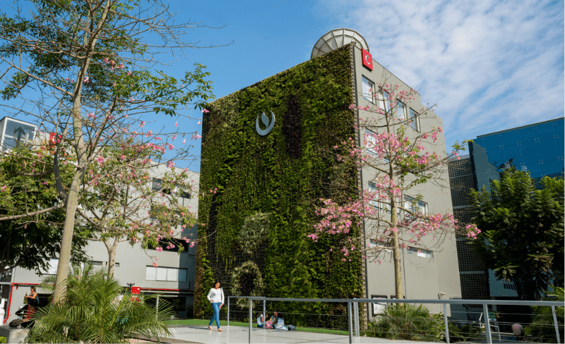
Una identidad propia, desde la UPC.Somos el capítulo de la UPC dentro de 180 Degrees Consulting, una red internacional de consultoría universitaria. Nuestra historia se escribe en Perú, con estudiantes que ponen sus conocimientos al servicio de organizaciones con propósito.
Aplicamos pensamiento estratégico a los retos que enfrentan organizaciones con propósito. La experiencia se construye en equipo: escuchar, analizar y convertir ideas en recomendaciones útiles.
Hablemos de tu organizaciónComprender a la organización, su contexto y lo que necesita resolver.
Combinar análisis, creatividad y perspectivas distintas desde la UPC.
Traducir los hallazgos en caminos de acción claros y relevantes.
Estas son áreas que podemos explorar en una primera conversación. El alcance y la disponibilidad de cada colaboración se confirman con el capítulo.
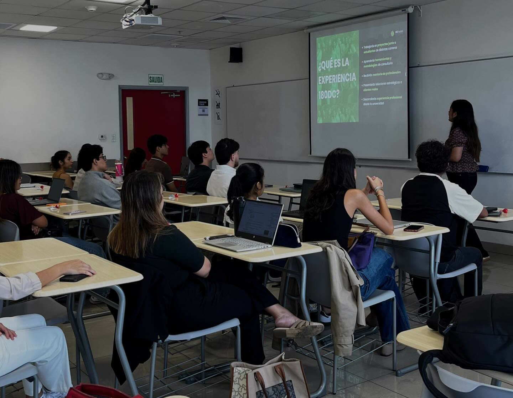
Escuchar. Pensar. Actuar.Entender el desafío, sus actores y restricciones antes de decidir hacia dónde avanzar.
Explorar oportunidades para ampliar el alcance o profundizar el impacto de una organización.
Dar claridad a la propuesta de valor y a los mensajes dirigidos a sus audiencias.
Conversar sobre continuidad, colaboración y vínculos que fortalezcan una iniciativa.
Estamos preparando este espacio para compartir proyectos y resultados confirmados. Mientras tanto, puedes conocer la actividad real de nuestra comunidad.
Ver al equipo en acción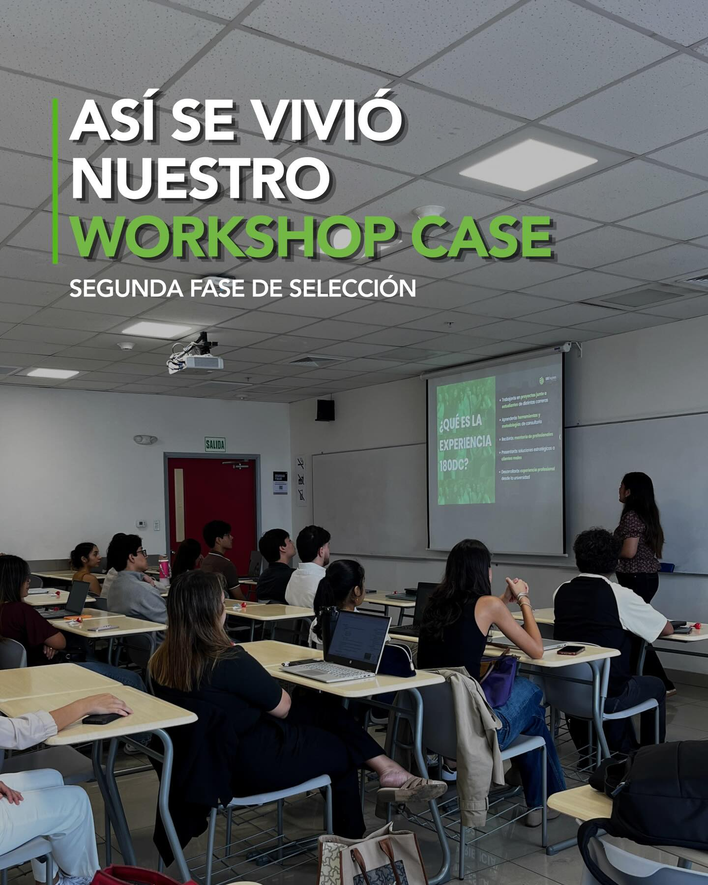
Personas reales, ideas diversas, una misma intención: poner el talento universitario en movimiento.
President

Public Relations Director
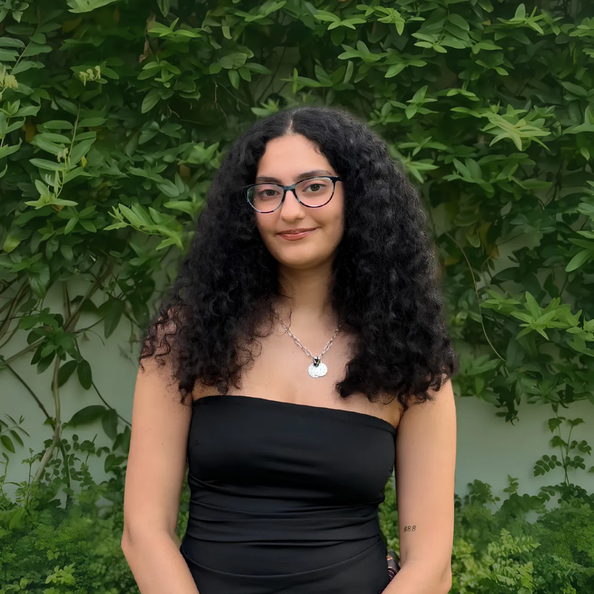
Communications Director
Finance & Fundraising Director
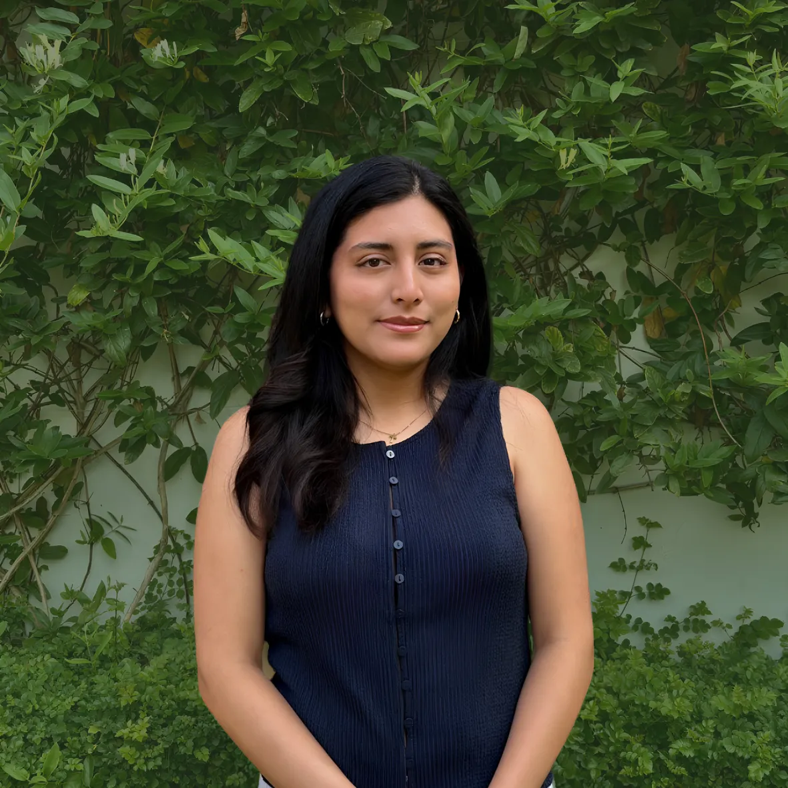
Talent Management Director
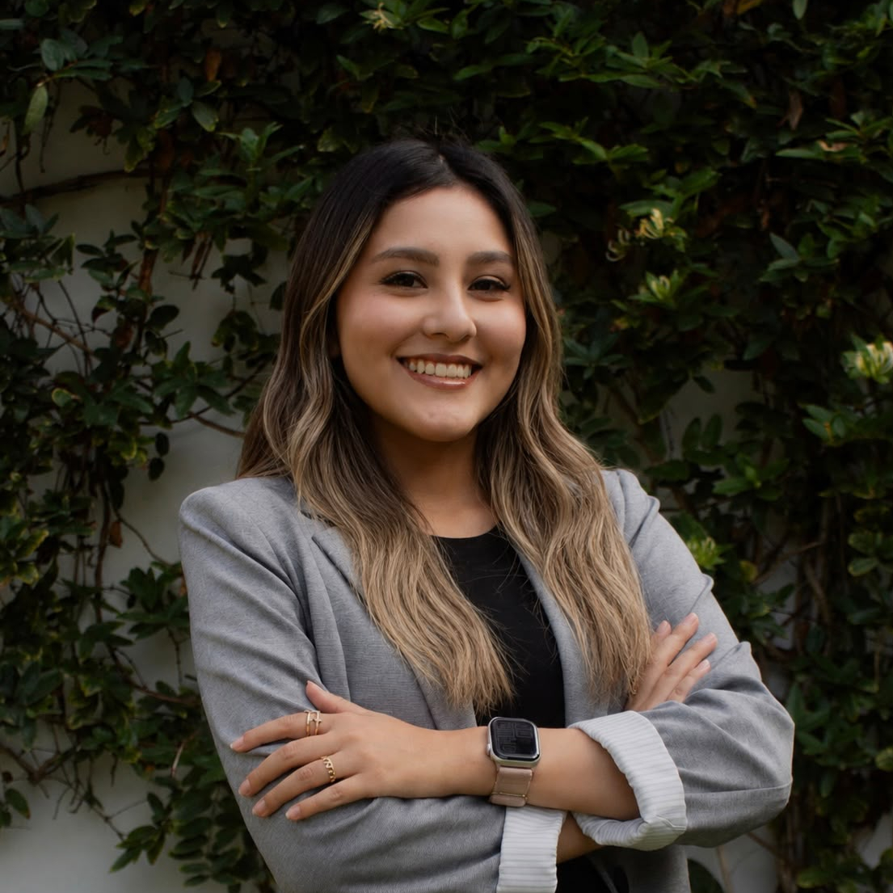
Legal Affairs Director
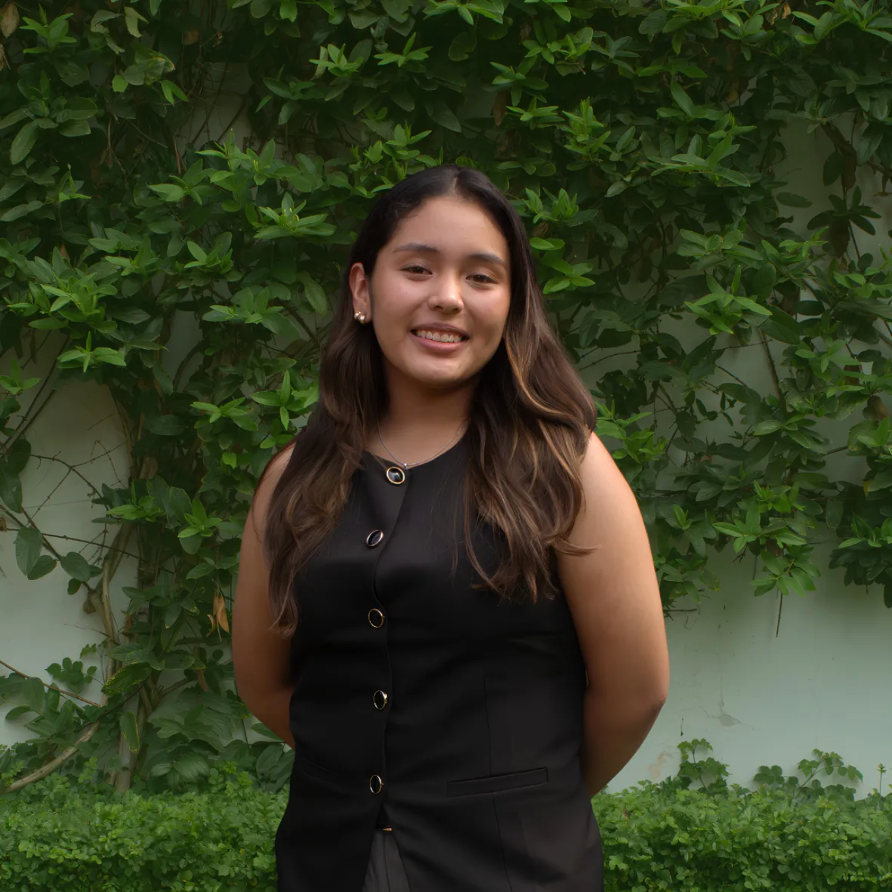
Director of Consulting
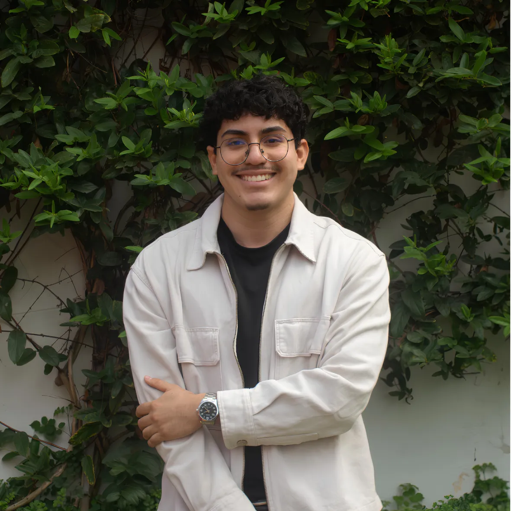
Director of Consulting
Equipo directivo publicado por 180 Degrees Consulting.
Una selección de publicaciones de @180dc_upc. No es un feed automático: para ver lo más reciente, abre el perfil oficial.
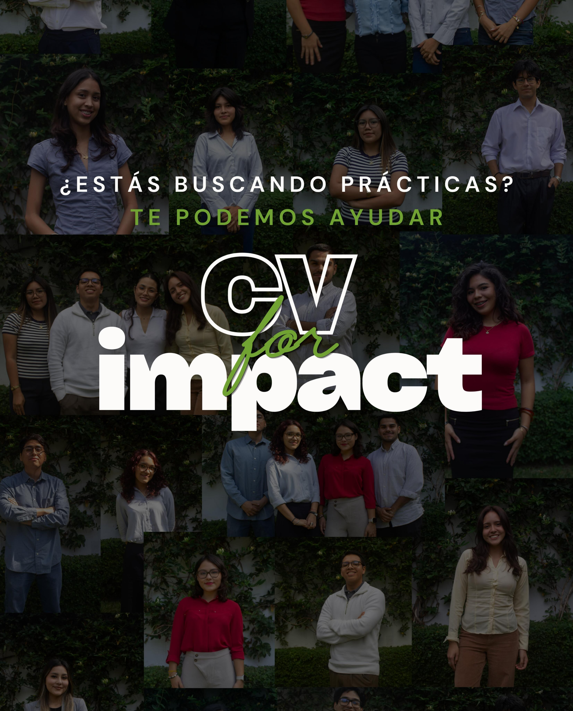
CV for impact ↗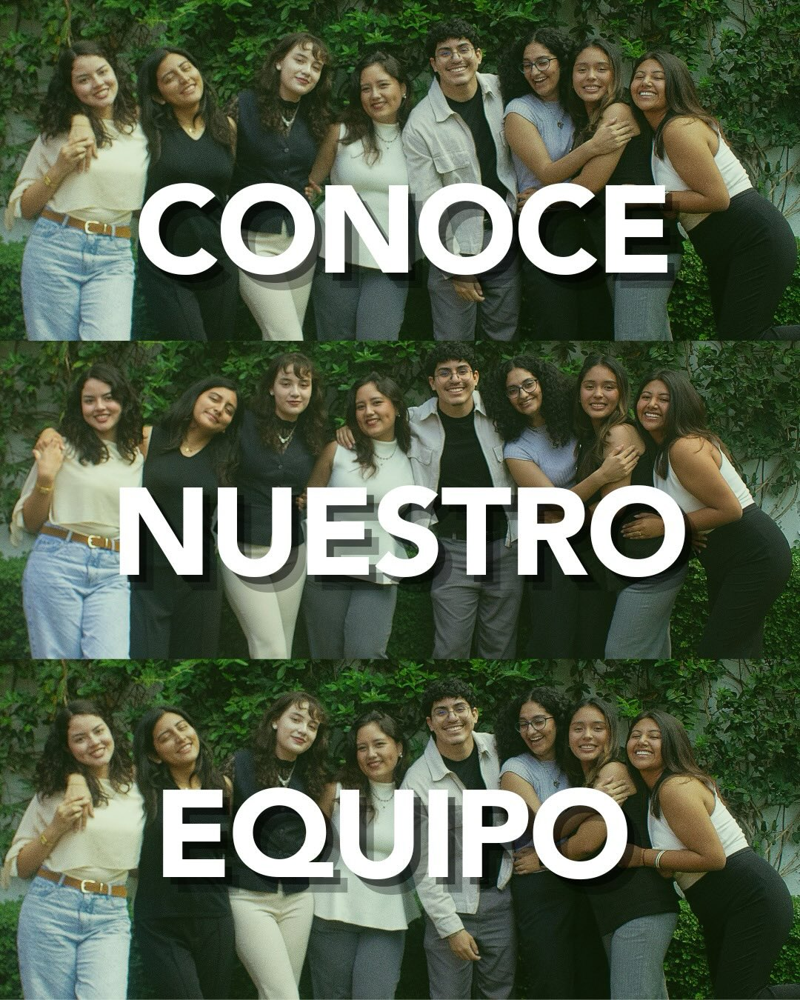
Conoce al equipo ↗ Workshop case ↗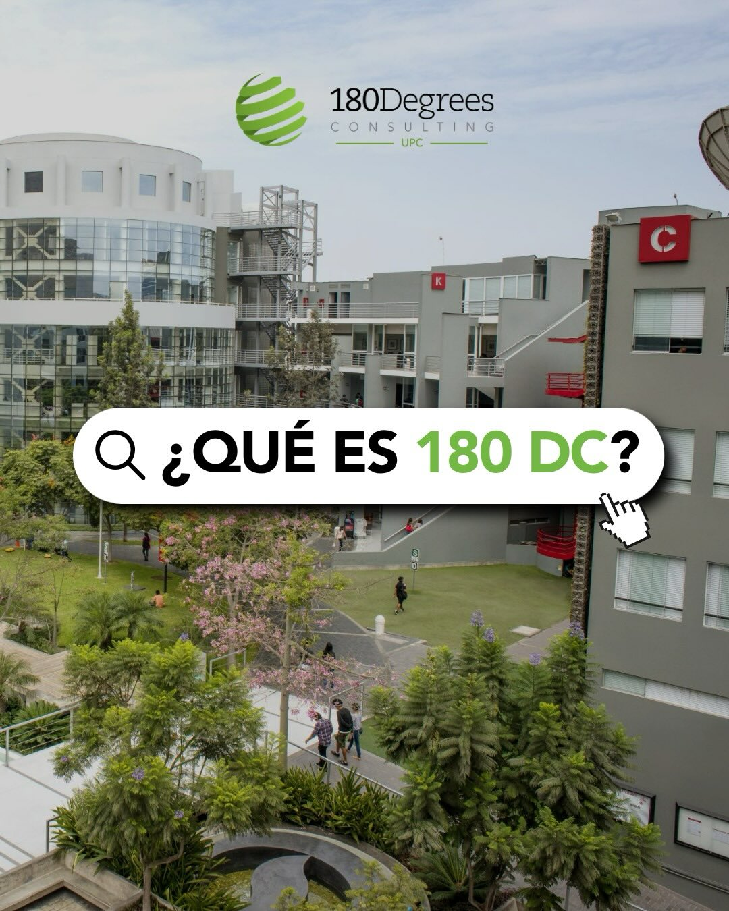
Qué es 180DC ↗Cuéntanos qué desafío estratégico quieres explorar y conversemos sobre las posibilidades de colaboración.
Escribir al capítuloConoce a la comunidad y escríbenos para preguntar por las próximas oportunidades de participación.
Quiero participar